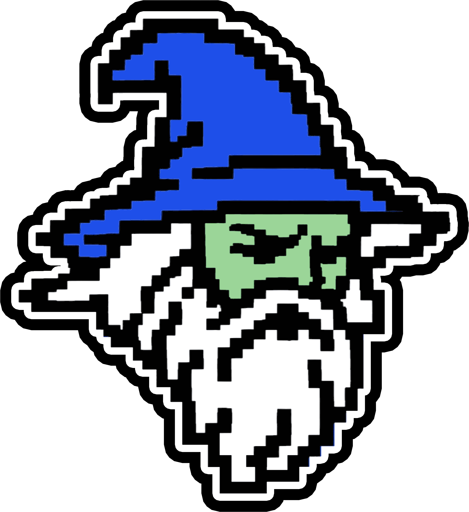

Estás haciendo la pantalla más pequeña.
Por favor, agranda la ventana para sumergirte en LaBiblioteca.com
Esta experiencia es para ordenador.
Por favor, entra desde un ordenador para sumergirte en LaBiblioteca.com